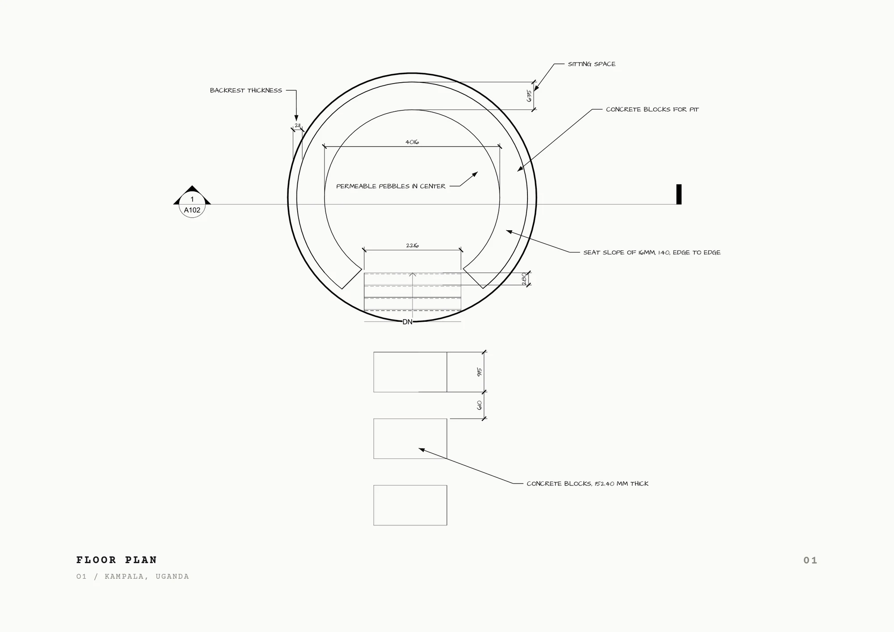
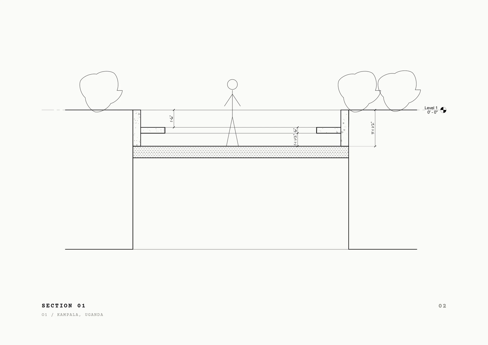
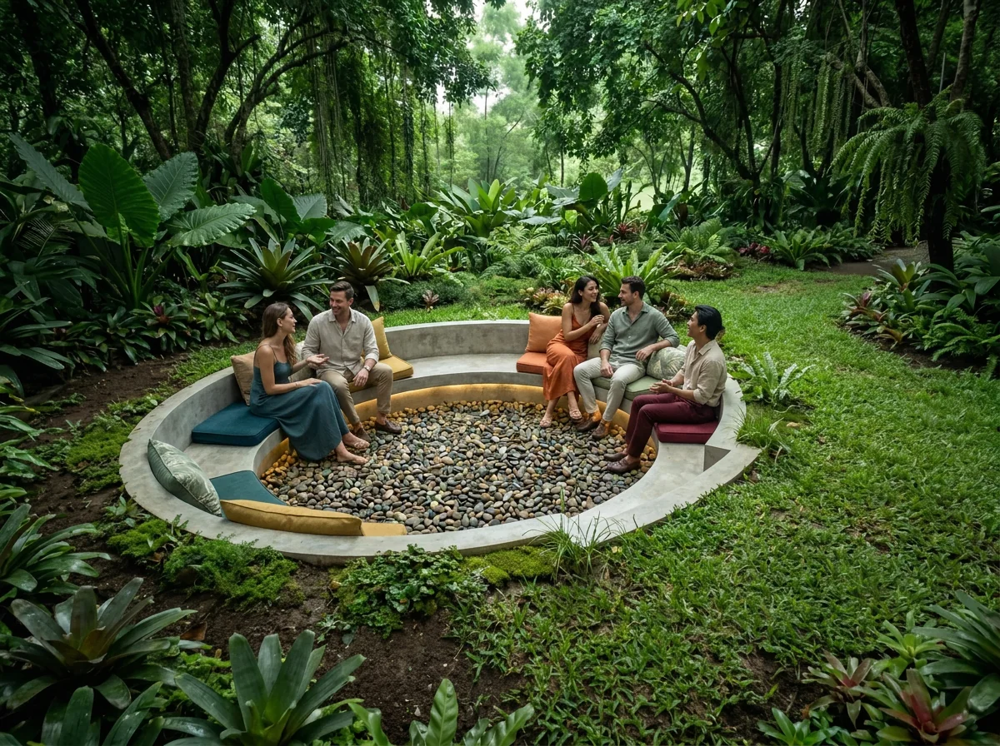
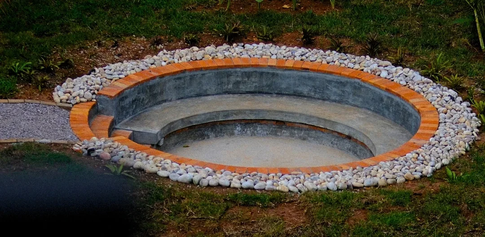

001 / Project
O1
A sunken pit in the front garden of a family home in Kampala: a place for gatherings, and for coffee alone in the morning. The pit is 3′-1½″ deep and the seat sits 1′-6″ below grade, so once you are seated the lawn arrives at eye level. The garden stops being something you look at and becomes the room you are in.
Everything was sourced locally, and the brick ring was chosen to match the facade of the house. The planting is deliberately young — over the coming year it will close around the pit until the view out is entirely green. It is planted and kept by my father, who proposed the project, which makes the upkeep part of the design.

Drawings
2 plates

Render
Design intent
Built
Photographs
From site
NotesOn the first day of site work I found an error in my own section: the excavation was dimensioned at 2′-7½″ instead of 3′-1½″, and the team had to go back and take out the extra depth. It cost hours. A drawing is not finished until someone has built from it.
O1 is the first thing I have designed that was actually constructed. Working in block, brick and earth — alongside a contractor and a landscape designer — taught me more about how materials behave than any amount of modelling.